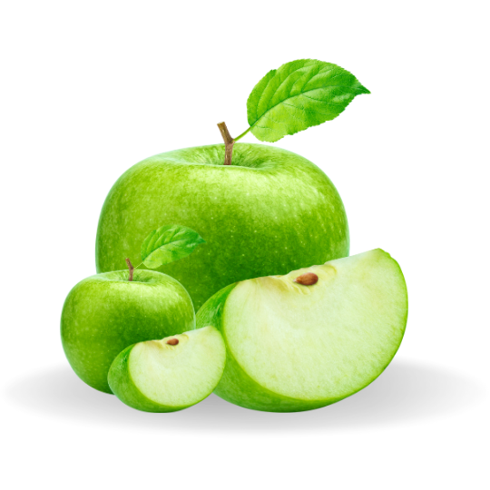
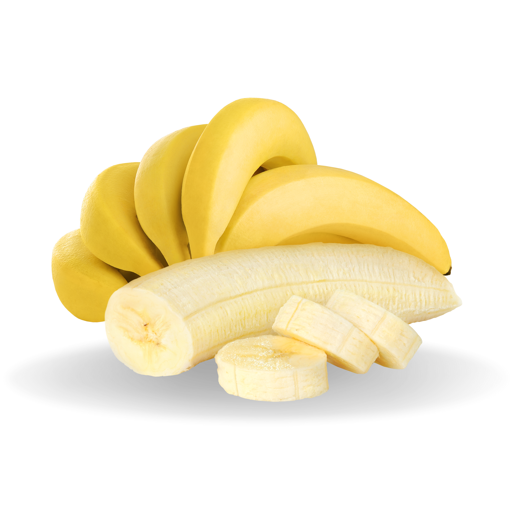
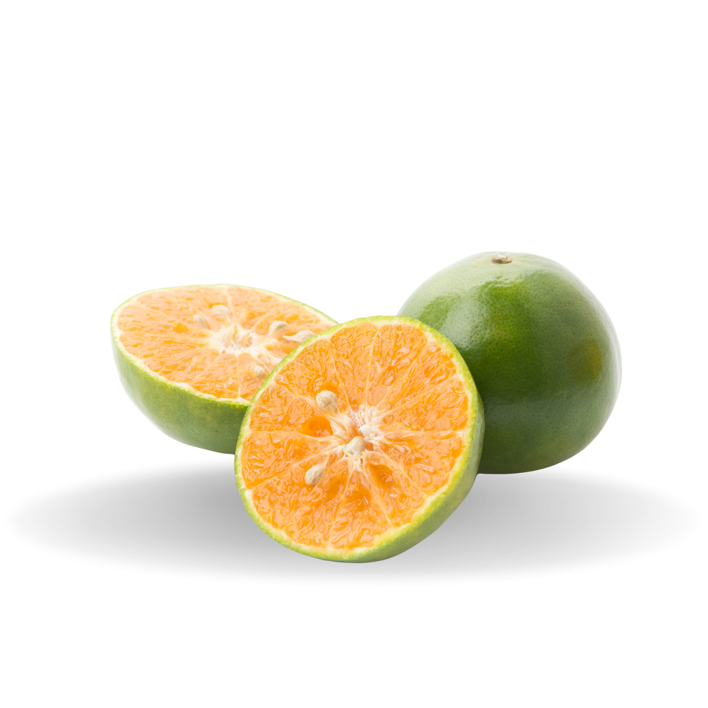
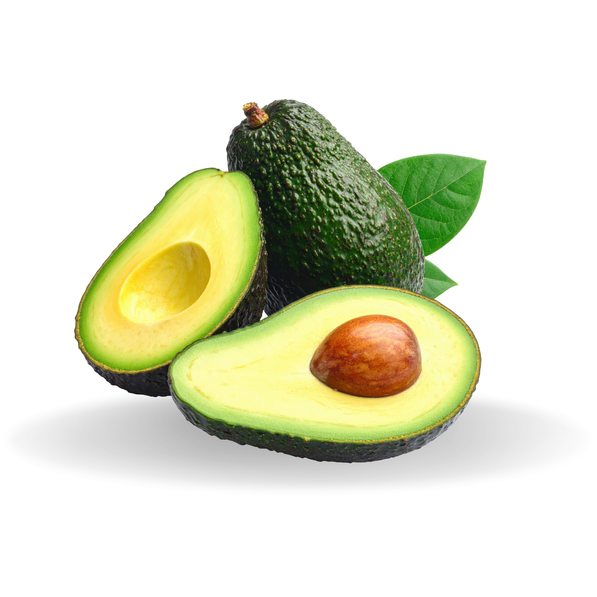
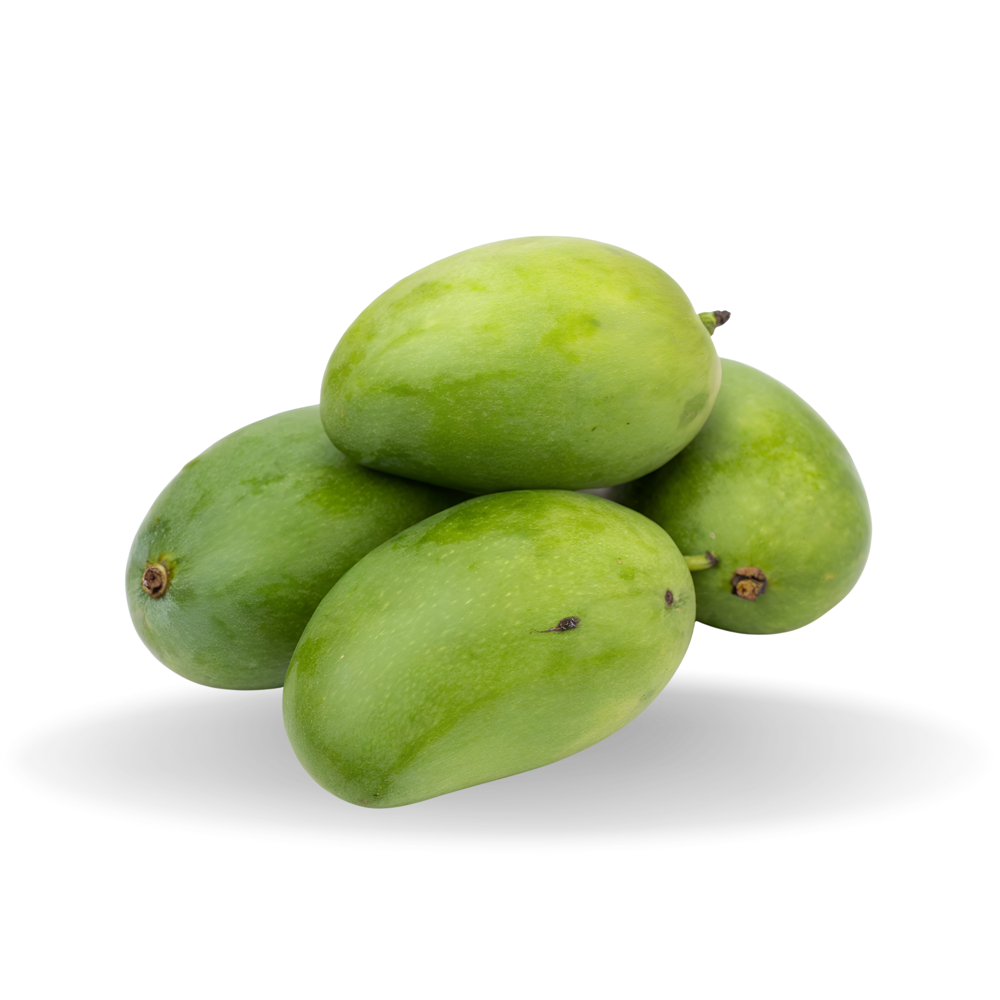
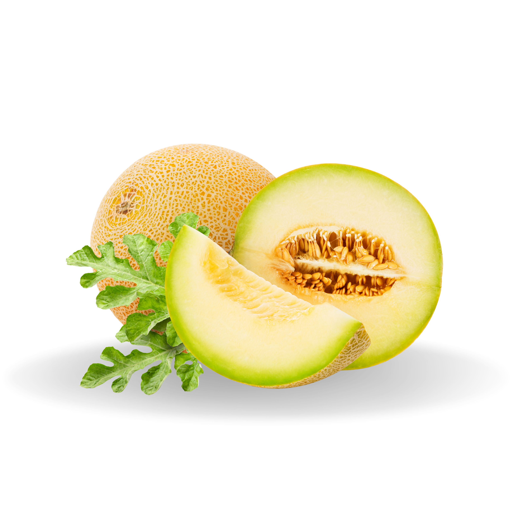
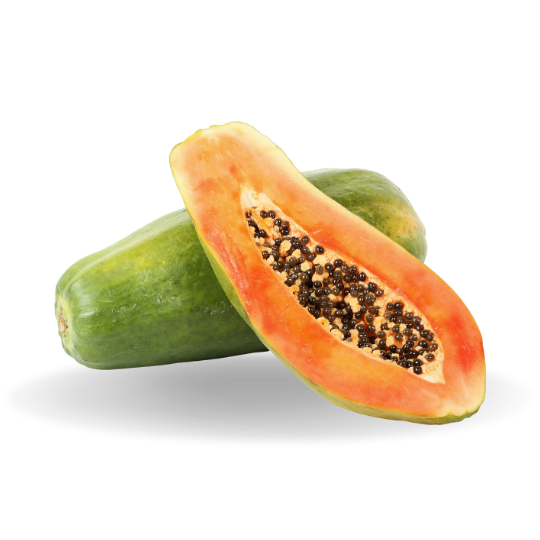
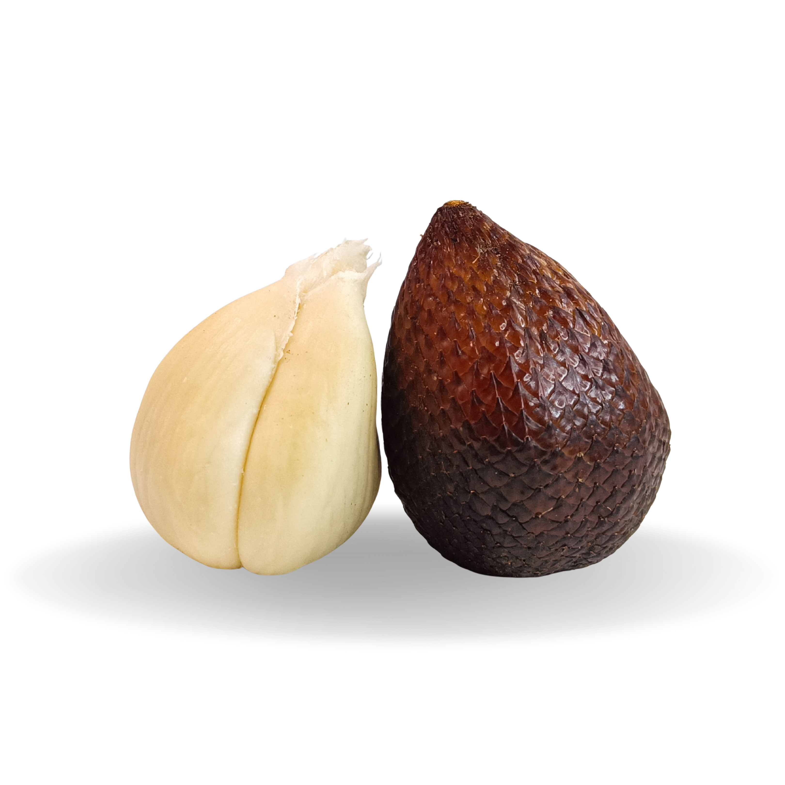
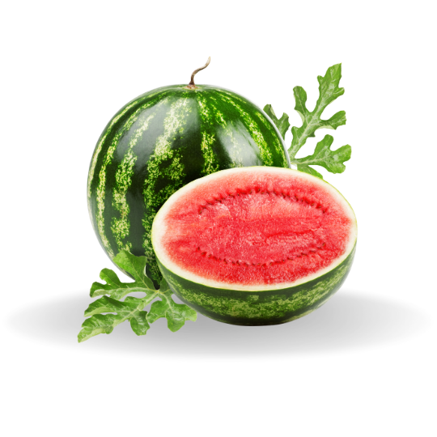

Deteksi Buah-Buahan Lokal menggunakan AI (Artificial Intelligence)
Teknologi pembelajaran mesin untuk mengenali buah lokal dengan cepat, akurat, dan mudah digunakan di perangkat Anda.
Buah yang Didukung
Buah-Buahan lokal yang bisa dideteksi oleh sistem

Apel
Pisang
Jeruk Jambu Biji
Jambu Biji

Alpukat
Mangga
Melon
Pepaya
Salak
SemangkaCara Kerja
Deteksi buah dengan mudah dalam 3 langkah sederhana
Unggah Gambar
Pilih gambar buah yang ingin dideteksi dari perangkat Anda
Proses Deteksi
Sistem akan menganalisis gambar menggunakan AI canggih
Dapatkan Hasil
Lihat hasil deteksi buah dengan akurasi tinggi
Didukung Teknologi Terkini
Menggunakan framework deep learning modern untuk hasil deteksi terbaik.
YOLOv11
Algoritma deteksi objek real-time untuk akurasi tinggi dan cepat.
v11Python
Bahasa pemrograman utama untuk pengembangan AI dan pemrosesan data.
3.10+PyTorch
Framework deep learning yang kuat untuk training dan inference model.
2.0+Flask API
Backend ringan untuk deployment model dan integrasi aplikasi.
APIArsitektur Sistem
Alur kerja end-to-end dari input gambar hingga hasil deteksi.
Input Gambar
Preprocessing
YOLO Model
Hasil Deteksi
Deteksi Buah
Unggah gambar buah untuk memulai deteksi
Upload Fruit Image
Image selected: {{ selectedFileName || 'belum ada file' }}
Format yang didukung: JPG, JPEG, PNG
Pratinjau gambar akan muncul di sini
Hasil Deteksi
Hasil deteksi akan muncul di sini
Tidak ada buah yang terdeteksi dalam gambar.
| Kandungan | Jumlah |
|---|---|
| {{ row.label }} | {{ row.value }} |